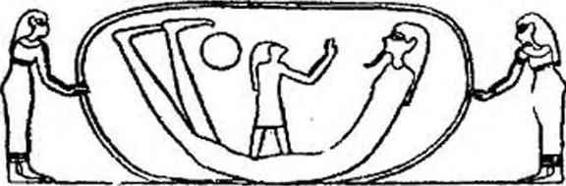
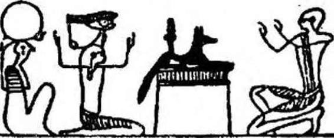

Şekil — 7
Anubis, solda, tanrıların kâtibi Thot, sağda, ölmüş firavunu, Mısırlıların Pa - douait dedikleri mezarın tapınma salonunda, tanrısal kutsama aracılığı ile, bol sularla yıkıyorlar. Bu Tapınma Salonu mabetlerde de bulunmaktaydı. Firavun, saltanatı sırasında «Tanrıların Oğlu» sıfatıyla orada, nitelikleri çok kutsal sayılan ve bazı sırları bir tek kendisi bilen kher - heb rahibi tarafından kutsanmıştı. (Rituel du Culte quotidien : Dinin günlük Ayinleri, A. MONTET.
duktan sonra ölüler kalplerindeki pislikleri atmak İçin yapmaları gereken şeylerle uğraşırlar; uygun dualarla bunu başaracaklardır. Râ’yı yücelteceklerdir (XV. Bab).
J. Capart'a göre «Ölüler Kitabı»nın XVI. Bab’ı dünyanın yaratılışını anlatır. Bundan sonra XXI. Bab’dan XXX. Bab’a kadar, ölüye hiç bir zaman «ne çürüyecek, ne kokacak» yeni bir bellek kazanmak İçin «Tanrısal Alt Dünyada ağzının gücünü» yeniden bulması için, «iç organlarının derinliklerinden kalbini sökmek» için birbirleriyle çekişen Heliopolis tanrılarının büyülerinden sıyrılmak için gerekli yöntem ve formüller açıklanır. Gökyüzünün Kapıları önünde «Anubls’in, bacaklarını kuvvetlendirmesi için okunacak XXVI. Bab’ı hatırlayacaktır." (G. Kolpaktchy çevirisi). XXX. Bab, CXXV. Bab’da tekrarlanacak olan, ilk yargılamanın ne olacağını anlatır. Bu, bir bakıma, büyük ruh tartılması (psychostasie) sahnesinin tekrarıdır. XXI. Bab’dan XLI. Bab’a kadar, pislikle beslenen, yakıp bitirici ateş tüküren sekiz tane timsah başlı şeytandan, ölünün kendini korumayı bilmesi için, rahip tarafından okunacaktır. Ölünün kendisine öğretilen büyülü afsunları kesinlikle hatırında tutması gerekmektedir. Onu gözleyen kötü ruhları korkutmak için dualarını haykırmalıdır. XLII. den XLVII. ye kadar olan Bab’ların konusu «ölünün organlarının tanrısallaştırılması»dır. «Omurgam Seth’inki erkeklik uzvum Osiris'in ki olacak» der, ölü (Kolpaktchy çevirisi). Ölünün kadavrasının çürümeyeceğini, Osiris gibi, bedeninin parçalanmayacağını, ancak «ışığa doğru yükselebilen ruhsal bir beden» haline geleceğini ona açıklayan İlâhileri iyi bilmesi Önemlidir. XLVIII ve XLIX. bölümler X. ve XI. yi tekrarlar. L.— LXH, bab- lar sayesinde ruh yeniden «hayat nefesini» bulur, önünde yer ve gök’ün Kapılarının açıldığını, ve aynı zamanda Osiris’in mekânı olan Semâvi Nil’in sularını görür, «suya sahip olmam için gerekeni yap» der, Osiris’e. LXIV. den LXXV. ye kadar olan Bab’lar ruhun güneşe nasıl yükseleceğini, îsis’in bağrında nasıl gençleşeceğini, «anası olan» gök mekânında nasıl yeniden doğacağını (S. Mayassis), gökte olan Hellopolls’te tanrıların yanında oturmaya nasıl kabul edileceğini ölüye anlatır. Bundan sonra LXXVL Bab’dan C. Bab’a kadar ölüye, kendi kendini değiştirebilmesine yarayan «değişme formüllerini» seçmesi tavsiye edilir. Horus Şahini veya Soğuk bölgelerin Işıklı Ruh’u olabilecektir. Sıcaklık ve ışık olacak, ebedi kozmik titreşim içinde titreşim olacaktır. «Değişim formülleri» ölünün yeni bir bilgelik kazanabilmesi İçin, okuyucu rahip tarafından tekrarlanacaktır. Böylece ruh, onu doğru bularak mutlular arasına ayıracak veya, atılmışların, evrenine gönderecek Mahkeme önüne çıkabilecektir; Râ'nın güneş kayığında yer alabilecektir. Jamblllque «Mısırlıların Sırları» adındaki yapıtında şöyle der : «Bu güneş gemisi üzerinde yer alıp yolculuk eden, âlemi yöneten güçlerin bir görünüşünü simgeler»; «tanrıların çift yaşamı»nı simgeleyen yılanın içinden (Maspero), on iki kadın iplerle aşağı dünyaya çekerken, ruhun geçebilmesi için «Ruh, yılanın vücuduna, karanlıklara yönelik kuyruk tarafından girmekte ve her zaman ışık yönünde olan ağızdan dışarı çıkmaktadır..» Böylece ebediyet ve reenkarnas-

Şekil — 8
IV. Ramses’in ölüm salonunda, Osiris «Batı’nın Boğası» Ska- rabe’nin meydana getirdiği yuvarlak nesne içinde oğlu Horus’u oluşturuyor. Bu yuvarlak, yeniden doğuşun hem sembolü, hem de kalıbıdır. İsis ve Nephtis Skarabenin yuvarlağını tutuyorlar. Böylece her Ölünün ruhu, İsis’ten gelen tabiatının sırrı sayesinde, ruh Horus haline geleceği ve «Samanyolunun» ışığı olan kendi sothiaque ışığı içinde parlayacağı gökyüzünde ebediyen yaşayabilmesi için yeniden doğacaktır.
Sothiaque : Sothio, Sirius yıldızının Mısır dilindeki adı. Rski astronomide 1460 yıllık bir dönemi belirler.
yonun sembolü olan yılanı «geçtikten» sonra, yeni sihri güçler kazanabilecektir. Ölü, öbür dünyaya girdiğinde, her yerde «eski kıyametlerin» izlerini görecektir, ölüler Kitabı’nda, «dünyaların yıkılışından» önce vuku bulan «gökteki savaşlar» söz konusudur. Bu geleneğin ısrarla tekrarlanması «zamanın uçlarında» korkunç yeryüzü karışıklıkları olduğunu doğrulamakta değil midir? ölüler Kitabı’nın açıklamaları Babil Tufanının, Gılgamış destanının, Tevrat’taki Sodom ve Gomorra’nın benzeridir. O Evren Yıkıcı Titan’lar kimlerdi? Başka bir gezegenden gelen varlıklar mı, yahut atom bombasının mevcudiyet ve kullanışını o zamandan bilen bizim dünyanın adamları mı?
CI. den CXXIV. ye kadar olan Bab’lar ölünün Batı'nın sırlarının ve tanrıların yazıcısı olan Thot’un Gizli Kitaplarının sırları bilgisini kolaylaştırmak için okunur. Bu da Osiris’in krallığı olan Ro - Setau’nun önüne gelmeden «Işığın Yedi Derecesini» geçebilmesi içindir. CXXV. Bab, resmî diriliş ve yükseliş ile sonuçlanacak temizleyici İtirafların ünlü yargılanma ve ruhun tartılışının Bab’ıdır. O zamana kadar ölünün ruhu, ka’sı, dublesi; mutluluk alanlarını (Champs eyseens) hayal meyal görmüştü. Oraya hiç nüfûz edememişti. Bundan böyle, tanrılar mahkemesinde temize çıktıktan sonra, Mutluların semâvı kâinatı ile bütünleşebilecek, gerçekten yalnız kendisinin olan ebedî İsmiyle adlandırılabilecek ve tabiatı tanrıların tabiatına eşit olacaktır. Ancak, metnimizin anlaşılabilir olması İçin, daha ileride CXXV. Bab’dan daha ayrıntılı sözedeceğlz. CXXVI. - CXXXIX. Bab’lar, ruh, Osiris olduğu ve son mükemmeliyete eriştiği zaman, yaratıcı ışıkta ışığıyla eriyip, zaman ve mekân boyunca sonsuz, kendi ışığında mutlu, bozulamaz olduğu ve bu ışıkla Osiris’in Evindeki gökte parlayacağı zaman söyleyeceği formülleri hatırlatır. Bir veya bir çok Bab’Iarı muskalarla birlikte mumyanın lahdine konulan ölüler Kitabının bu kısa özetine bir sonuç olarak CXC. son Bab"ını bütünüyle G. Kolpaktchy’nln çevirisinden aktarıyoruz : bu Kitap, tanrısallaşmış Ruhun, Râ’nın bağrındaki mükemmelleşmesini konu alır ve onu Osiris nezdinde yüceltir, Amenti’nin Efendisi nezdinde güçlü kılar ve tanrıların merte- beleşmelerinde (hiyerarşisinde) saygıya lâyık kılar. Bu kitap Douat’ın esrarlı yerlerinin sırlarını açıklar, alt dünyanın sırlarına inisiye olmakta bir rehber vazifesi görür... Bu Kitabı okurken sana ve Rahip Kher-heb’e yakın olanlardan başka, hiç bir inşan varlığının seni görmesine müsaade etme... İçine yıldızlı dok,u- malar gerilmiş bir odaya kapan. O zaman bu metinlerin, kendi için okunacağı her ölünün ruhu yaşayanlar arasında, parlak gün ışığı içinde dolaşabilecek; tanrılar arasında güçlü olacak... ve tanrılar onu yokladıktan sonra, ölüyü eşitleri olarak tanıyacaklar... Gerçekte bu Kitap çok gizli ve çok derin bir sırdır...» GERÇEKTEN BU KİTAP ÇOK BÜYÜK VE ÇOK DERİN BİR SIRDIR. Ölüler Kitabı'nın gerçekten ne olduğunu kim bilecek? Onca sembolün gerçek anlamını bize kim açıklayacak? Firavunların Mısır’ındaki mabetlerde inisiye olanlar çok oldu; ancak, öğrendiğini anlatan hiç olmadı. Pseudo Cyprianus’u dinleyelim: «Yirmi yaşıma gelince, Memfis’te, Mısırlılar nezdinde derinliğine varılmaz, kutsal şeyler tanıdım» (Confessis, 1758). Jambilique'in, Mısırlıların Sırları adlı kitabını, P. Quillard’in çevirisinden, tekrar okuyalım : «Muhayyilenden veya söylendiğini duyduğun şeylerden gelebilecek, sembollerin tasvirinden düşünceni ayır; ancak zihnî (entellektüel) gerçeklere bağlan». Lucien’in «l’Assemblee des Dieux : Tanrılar Topluluğu» adlı yapıtının E. Chambery çevirisinde şöyle bir not vardır : «Mısırlıların dini muammalarla doludur ve inisiye olunmayınca (konuyu yakından bilmeden) asla onunla alay etmemeliyiz. Gerçekten de tanrıların tanrılar, köpekbaşlı’ların köpekbaşlı olduğunu bilmek için bu sırları tanımak çok gereklidir.» Evet gerçekten Ölüler Kitabı çok büyük ve derin bir sırdır.
IV. BAB
ÖLÜLERİN EBEDİ BİR ADLARI VARDIR VE ONLAR KAPILARI AÇICI SÖZCÜKLERİ BİLMEK ZORUNDADIRLAR.
Ölüler Kitabı sayesinde, ölüler, daha doğrusu dubleleri, doğumlarında onlarla beraber olmuş bulunan, ölümden sonra onları terk eden ka’larının ellerinde, kötü ruhların hilelerini bozacak sihirli formüller vardı. Bu papirüs sayesinde ikinci İsimlerini ebedi adlarını hiçbir zaman unutmayacaklardır. Bu sihirli ada sahip olmaksızın kimse öbür dünyada yaşayamayacak, onsuz, hiçbir tanrı onları temize çıkmışlar arasında saymayacaktır. Ölüler Kitabı sayesinde Eléphntine'in kasırgalar tanrıçasının dört testisinin İsimlerini saymak, Vadî Engereğinin nefesini fark etmek, ufukta bir skarabe şekliyle canlanmadan evvel güneşin yer altı dünyasında her gece aldığı otuz yedi şekli tanımak kolaydı. O güneş ki, doğuşunda uçsuz bucaksız Teb şehrinin altın yap- rakçıklarla kaplı piramitçikler (piramidión) üstündeki yüzlerce dikilitaşı ve yeryüzüne hayat dağıtan ve onu ebedi kılan Hâ’yı yüceltmek için inşa edilmiş mabetlerin dev kapılarını aydınlatıyordu... Ölüler de diriler kadar, karanlıklan açan, her günün ışığında Nil’e şarkı söyleten koç başlı güneşi yüceltmeyi bilmelidirler. Güneş kayığı, Sokharis’in krallığında, önlerinden geçerken ölüler ilkel (élémentaire) tanrılarla beraber, evrenin İlk kaostan çıktığından beri, her gün batışının eşiğinde yenilenen Amon-Râ’nın harika serüveni ile mutlanırlar. Yeraltı nehrinin kıyılarındaki mevcûdiyetleri ile, Batı Bölgesinde her gece Amon- Râ’nın kutladığı esrarlı fiile hep birlikte katılırlar... Evet, san’- atkâr tarafından yazılmış duaların gücü ve değeri ile, bundan böyle bedenlerini taşlaşmaktan koruyan sihirli sözcüklerin koruması altındadırlar ve «ka» ları doğru olan tanrılar önünde, olumsuz İtirafların kefaret dualarını* tekrarlayabilecek, «kapı açıcı» sözleri söyleyebilecek; iç organlarını deşmek için karınlarına bastıran eli bıçaklı veya Shesmou’nun yaptığı gibi «sözcüklerin sihir gücünü yiyen» veya mumyaların burnuna kokmuş bir nefes gibi giren sinsi tanrılardan kurtulabilecektir. Evet, Ölüler Kitabının derin anlamlı sözlerini iyi bilirlerse Gökyüzünün Büyüklerine meydan okumaya cesaret eden tanrılardan korkmayacaklardır. Ve özellikle CXXV. Bab sayesinde Tanrısal Mahkemenin Gerçek ve Adalet Efendilerinin önüne, Yedi Işık Saçan’ın, Yedi Ruh’un, Büyük Hakim Osiris’in, Horus’un dört

Şekil — 9
Ölü, sağda, Üç Işık karşısında tapınma halinde. Birincisi bir lâhit üzerine uzanmış «geceleyin gören, ölmüşlerin patronu> çakal Anubis’in simgelediği Anubis’in Işığı’dır. Bu Anubis’in Işığı, ruhun «gözlerinin açılması» merasiminden hemen sonra aldığı ışıktır, iki diğer figür, Güneş Işınlarının Işığı ve Ra’nın Işığıdır. - Anubis Vaktiyle Râ’nın oğlu idi – oğlunun, Amenti’nln koruyucu tanrılarının önüne, Osiris'in arkasında oturan, koruyan veya yakan, «erkek şekil Sebek olan güneş alevinin kadın şekil» Hétep - Sekhus gibi (S. Mayassis) hakimlerin karşısına korkusuzca çıkacaklardır. Her ölünün dünya yaratılalı beri, Ruhun Tartılışı olan, onları bekleyen bu korkunç sınav boyunca, savunmalarını takdim edebileceklerdir.
* Fransızca metinde geçen bir çok sözcük, belki de zorunlu olarak hıristiyan dinsel terimlerinden alınmıştır. Biz, kiliselerde söylenen şarkı, ilahi anlamına olan «Litanie»yi Kefaret (pişmanlık) duası olarak aktarmayı uygun bulduk.
Horus’un dört oğlunun refakatindeki Osiris’in önünde yeri öptükten sonra ruhlarını bütün pisliklerden yıkayabileceklerdir. Çünkü ruh, «bir kadının karnından çıktığı için» kısa mevcudiyeti boyunca, kendine yakışmayan tutkulara kapıldığı için pis- lenmiştir. Rituel funéraire : Cenaze Ayinlerl’nde, E. de Rougé, ölünün ruhunun kendi sal olmayışını bildiğini İsrarla İfade etmektedir. İçinde enkame olduğu beden tarafından işlenmiş hataları ruh hisseder. Ancak CXXV. Bab’daki dualar ve formüller sayesinde, onu belki de, Râ’nın ateşinde tutuşmadan, gökyüzünün parlaklığında onda erimeden doğrulardan bulacak olan kırk İki hakimin, Uluların, Işık saçanların, Karanlığın Kutlu Yüzlerinin önüne çıkmaktan korkmayacaktır.
RUHUN TARTILMA SAHNESİ VE OLUMSUZ İTİRAF
Çünkü, cehenneme veya cennete gönderilmeden evvel ölünün kalbi, yani vicdanı, tanrıların terazisine konulup tartılıyor ve hükümlendiriliyordu. Timsah ağızlı, suaygırı karınlı, metinlerde adı <müstekreh hayvan», <ruh Yiyicisi» olarak geçen bir canavar terazinin yakınında, ağzı sulanarak bekliyordu. Geri dönülmez yargıyı bildiren ölüler tanrısı Osiris yönünde, bakışlarını yumuşatıyordu. Her biri Eski Mısır’ın Zambak ve Papirüs çifte krallığının bir vilayetini (Nomark; Vali Hakimler), ayni zamanda insanların işlediği dince kararlaştırılmış (canonique) kırk iki günahtan birini temsil eden kırk İki adâlet tanrısı, topukları üzerine çökmüş, mahkeme önünde kendini temize çıkarması gereken ölüyü sorguya çekiyorlardı. Bu bütün cenaze papirüsleri üzerine resmi yapılan ünlü ruhun tartılması (Psychosta- sie) sahnesidir. Ölü o zaman, Thot’un önünde olumsuz itiraf denilen şeyleri söylemek zorundaydı. Thot, hiç bir ejiptologun keşfedemediği sebeplerden İbis ve maymun (babouln: şebek) ile temsil ediliyordu. Gizli kitapların sahibi idi. Kendi yaşamının milyonlarca yüzyıl süreceğini beyan etmişti (CLXXV. Bab). Thot, Osiris’in yeryüzündeki düşmanı domuzu, öbür dünyadaki düşmanı Apophis Yılanı'nı kovdu. Evet, teraziyi dikkatle izleyen Thot ve çakal kafalı Anubis önünde «İnsanlara karşı günah İşlemediğini. tanrıların hoşuna gitmeyecek hiç bir şey yapmadığını, hiyerarşiye (silsile-i merâtibe; mevki sıralanışına) saygılı olduğunu, ne öldürdüğünü, ne de öldürmek için emir verdiğini, kimsenin ıstırabına sebep olmadığını, mabetlere bırakılması gereken yiyecek ve tütsüleri gizliden ölçerek hırsızlık yapmadığını, ölülerin yiyecek ve içeceğinden çalmadığını, kutsal yerlerde cinsi fiilde bulunmadığını, komşusunun toprağını çalmak için yanlış ölçü kullanmadığım, uzunluk ölçülerini yanlış tutmayıp terazide hileli ağırlık kullanmadığını, tanrıların kuşlarını veya kutsal göllerin balıklarını çalmadığını, Teb Amon’unun sürülerine zarar vermediğini, mabetlerin hâzinesine bırakılması gereken gümüş külçelerini yanlış saymadığını* beyan ederek ölü, kendini temize çıkarmalıydı. Eli bıçaklı kırk iki tanrı Önünde, Thot ve Anubis önünde göğsünü yumruklardı: «Tabi, derdi; hayatımı iyilik etmek için kullandım, ve size yalan söylemeksizin, ebedi ve sevgili tanrılar, kendimi meth edebilirim, çünkü en İyiler arasında en iyi idim; zayıf olanları besledim. Susuz olana gün ortasında su verdim; hiç bir şeyi olmayana balık kayığımı ödünç verdim. Osiris, Thot ve Anubis önünde göğüslerini yumruklayan bu ölüler, ne kadar doğru, ne kadar iyilermiş! öbür dünyada onlara İnanacak olursak hepsi yetim babası, dulun dayanağı, şanssızların yardımcıları imişler! «Hellopolis’e yemin ederim, hiç günah işlemedim! Kher - Âoua’nın alev taşıyıcısına yemin ederim, hiç çalmadım! Hermopolis’in burnuna yemin ederim, hiç aldatmadım! Gölge yiyicisine (ruhları yok eden anlamına) yemin ederim, insan öldürmedim! GÖkün çift aslanına yemin ederim! Zahire çalmadım! Herakleopolis’in kemik kırıcısına yemin ederim! Mabedin servetini yağmalamadım! Akrabalarımı gömdüm. Hizmetkârlarımdan hiç birinin kızını esir etmedim. Kutsal hayvanlardan olan gökyüzünün akbabalarını besledim. Doğduğumdan beri bir defa bile, hâkim önünde dayak yemedim ve bir ölünün ruhunu ürkütecek hiç bir işaret çizmedim; temiz olmayan şeyleri davet edebilecek bir şekil de çizmedim.» Mezarlarına girmeden evvel, adalet tanrıları önünde çok günahsız olan bu ölüler, bu dünyada yalnız doğrulara tanınan bir hak olarak üzerinde kâtiplerin kazıdığı, aşağıdaki sözcüklerden ibaret bir kitabeyi, taşıyan mezar taşlarını diktirmeye özen gösterirler: «Bu yerden geçen biri, müteveffâ (ölmüş) falancayı hatırlasın. - Bu taşı okuyan, okuması yoksa başkasına okutan, ölünün ruhu için bir armağan olan duayı okusun». (Jean Capart çevirisi.) Batı kapılarının, temize çıkmışlarsa, önlerinde açıldığını görecek ölülerin olumsuz İtiraflarının gerisini izleyelim: boyunlarında XX. Bab’m bir kopyası asılı, Nil kıyılarında, firavun inciri ağaçlarının (Syco- morre; Ficus sycomorus) altında serinlemek İçin, güneşe (gündüze) çıkabilirler, gökyüzü tanrıçası Nout’un yarattıklarından yeniden tat alabilirler. «Size şükürler olsun, ey tanrılar! Siz ki Mısır toprağından gelenin kokusunu; mumyalandıktan ve gömüldükten, İkinci bedenin oluşmasını, iç varlığın dışa çıkıp görünür hale gelmesini sağlayan sihirli merhemi süründükten sonra, Ra’nın ruhu olan Herakliopolis’in zümrüdü ankâ kuşu gibi (phoenix) temizlenip karşınıza çıkanı tanırsınız. Size şükürler olsun, ey Amenti kapılarının ardında yaşayan Osiris peştemalları giyinmiş tanrılar, siz ki benzerlerini öldürdükleri, mabetlerin avlularındaki hayvanları çaldıkları, yalnızlıklarında saf olmadıktan veya nehrin sularını pislettikleri için organları çürüyüp kokanları tanırsınız. Tanrısal ruhlar, köpek başlı ruhlar, sizlere ebediyen şükürler olsun! Ben ki karşınıza çıkmadan ölmüş ve yeniden doğmuş, bedenimin yıkanıp sargılara sarıldığını, gözlerime antimuan sürüldüğünü görmüştüm. Bilirsiniz ki yumurtayı oluşurken kırmamışım, Mendes tekesi üzerine yemin etmemiş, Abydos'ta Ptah - Tatenen’in adını anmamışım. Beni kurtarınız! Beni yanınızda tutun, çünkü nefesim saf, kalbim saf, ellerim saftır ve beni görenler şöyle der: «Ey saf olan sen, hoş geldin! ruhun aşağı dünyada sükûnet içinde olsun... Hoş gelmiş ol; çünkü iç organlarını maat gölünde yıkadın; ey saf olan sen, Osiris’in, Amenti boğasının, Osiris Neberdjer’in, omurgası evrenin mihveri olan Osiris Djedi’nin karşısına çıkabilirsin.»
ÖLÜNÜN KALBİNİN VE MAATIN TÜYÜNÜN AĞIRLIĞI.
Ölünün olumsuz itiraflarını dinledikten sonra Thot ve Anjı- bis, - birincisi tanrıların yazıcısı, öbürü mezarlıkların koruyucusu, - teraziye bakarlar, ölünün, tören ekmeklerini, birayı, kızıl bir boğanın ayaklarını, dört çanak kan; beyaz bir ineğin dört çanak sütünü takdimeler masasına koyduğunu bilirler; bilirler ki ölü, vücuduna lapis - lazuli'den (lâcivert taşı) veya donuk yeşil aklk’ten (Jaspe) muskayı: udjat; çiçek bileziği ankham’ı